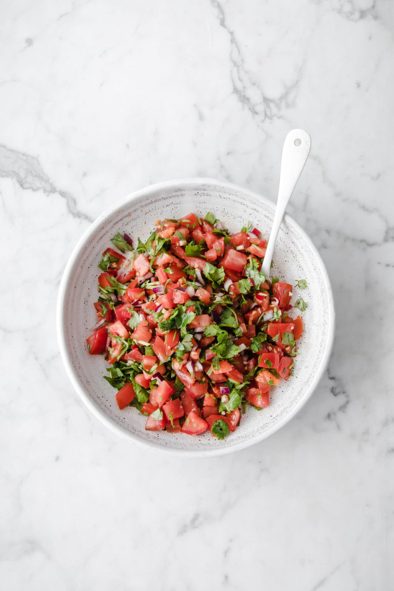

Keto Salsa Dressing

Description
Salsa is amazing on just about any dish asking for a little more flavour. So give your food a kick—in a delicious low Carb way, of course.
Ingredients
- 120 ml salsa
- 60 ml light olive oil
- 120 ml sour cream
- 6 tbsp mayonnaise or vegan mayonnaise
- 3 tbsp cider vinegar
- 1 tsp chilli powder
- 1 garlic clove, minced
- salt and pepper, to taste
Mayonnaise
Instructions
- Whisk all ingredients, except for the salt, in a bowl until the dressing is smooth.
- Or blend ingredients by shaking together in a jar with a tight fitting lid.
- Season with salt and pepper to taste.
Tips
- Try as a dressing on one of our delicious cheeseburgers... and pour it all over your side salad, too!
Nutrients
| Carbs |
Protein |
Fat |
Calories |
Fibre |
Sugar |
Sodium |
Calcium |
Sat |
GL |
| (g) |
(g) |
(g) |
(kCal) |
(g) |
(g) |
(mg) |
(mg) |
Fat (g) |
|
| 3.71 |
2.1 |
37.06 |
352.83 |
0.77 |
2.77 |
411.15 |
59.81 |
8.48 |
1.58 |
Back to top of page